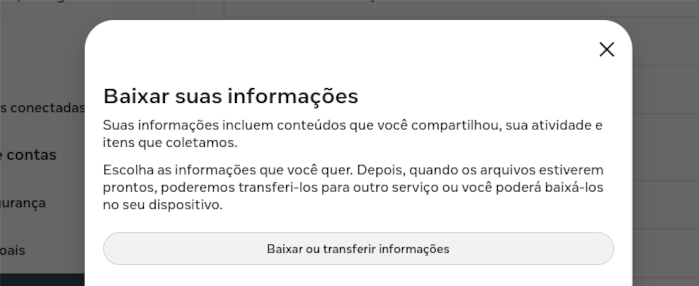
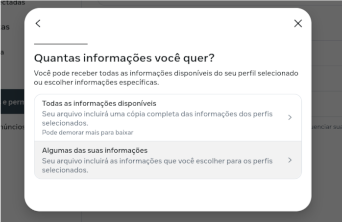
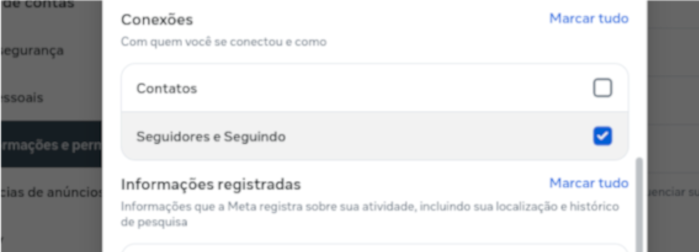
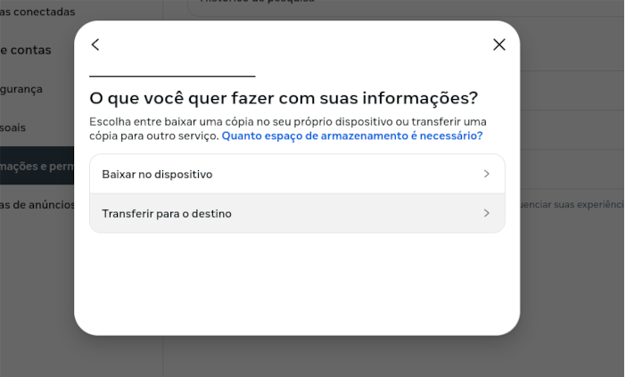
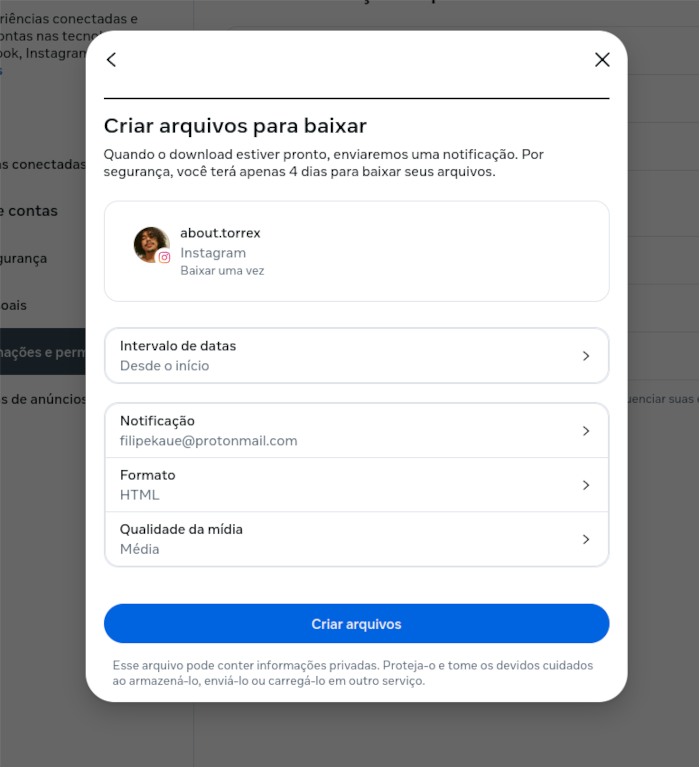
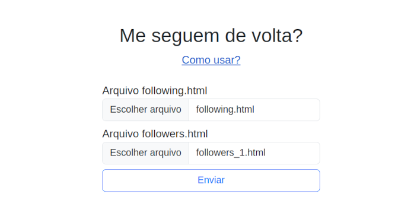

Este sistema permite verificar as pessoas que você segue no Instagram, mas que não te seguem de volta. Siga as etapas abaixo para começar.
Passos para Usar
1. Na Central de Contas do Instagram, requisite as informações 'Seguidores e Seguindo' com intervalo de datas configurado como 'Desde o inicio', tambem selecione o formato HTML
2. Após solicitar, levará um tempo até o Instagram enviar os dados. Você receberá a notificação por email, também estará visivel no link utilizado anteriormente
3. Com o arquvo .zip recebido, extraia e procure pelos arquivos followers_1.html e following.html
4. Envie esses arquivos nesta pagina, respeitando o nome requisitado nos campos de envio
Detalhes de como coletar as suas informações

Na Central de Contas do Instagram, clique em 'Baixar ou transferir informações'.

Escolha baixar 'Algumas das suas informações'.

Marque apenas a opção 'Seguidores e Seguindo'.

Selecione 'Baixar no dispositivo'.

Em intervalo de datas marque 'Desde o início'. Verifique se todas as informações estão iguais a da imagem

Após baixar e extrair os arquivos, faça upload obedecendo as informações requisitadas em cada campo de envio